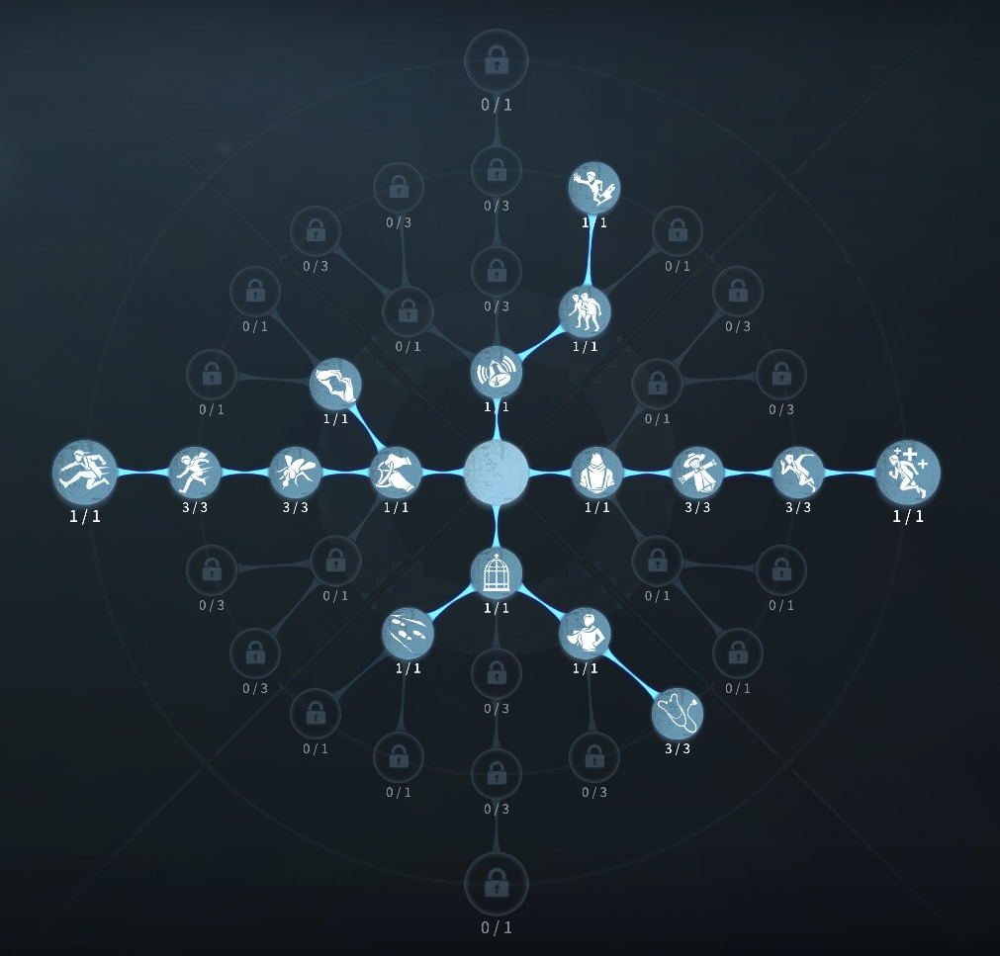
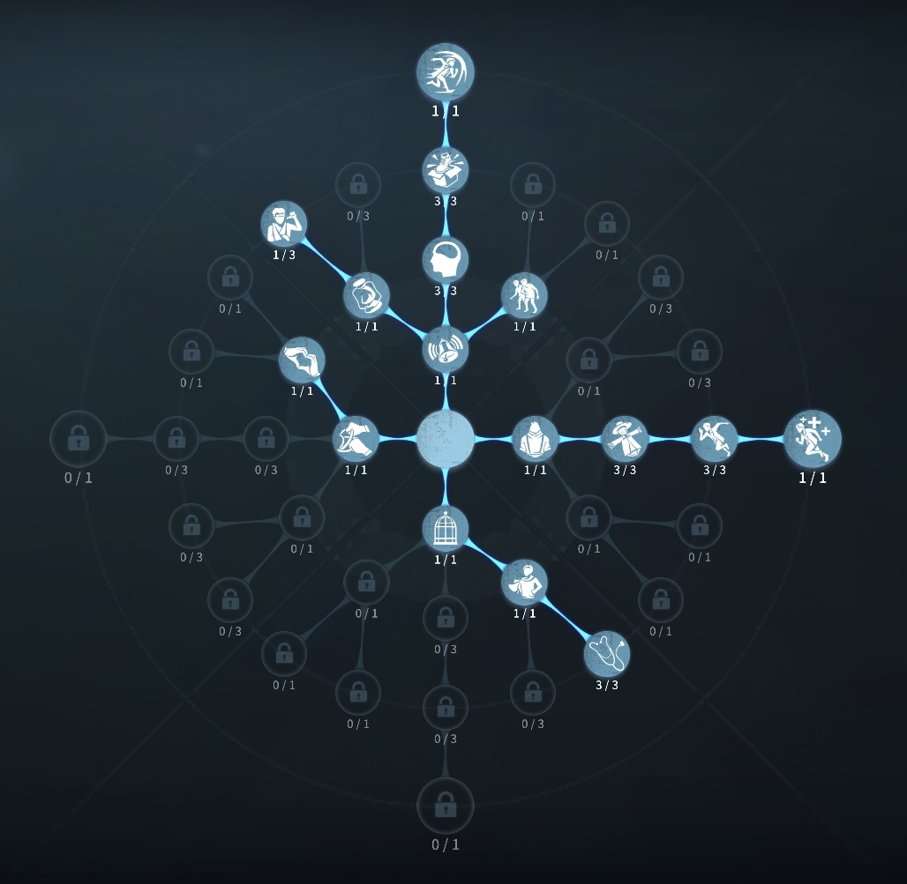

医師の評価
最大？？秒で0.5回復できるサバイバー！
外在特質と特徴
特質1:医薬精通
・1未満の負傷を治療できる。・鎮静剤を使用時、耐久度を消費せず自己治療できる。
・自己治療は0.5ダメージごとで、治療時間は半分になる。
・自己治療時間はハンターのデバフを受けない。
・自己治療進度はダメージを負ってもリセットされない。
特質2:医術熟練
・自己治療速度が20%上昇する・他人を治療する速度が40%上昇する。医師が2/3/4人以上いる時、効果は25%/10%/5%に減少する。
・全サバイバーの治療速度が5%上昇する（ダウン自己治療速度には効果はない）
特質3:敏感
・通常攻撃以下のダメージを受けた時、移動速度が2秒間45%増加する。特質4:荘園旧友
・被ダメ後の加速する時間が２秒に延びる特徴
医師は注射器を無限につかうことが可能で、
回復に特化したキャラ負傷サバイバーの治療も早い。
また、板感で治療し、治療中の医師は板攻防の厚がけにもなり板当て狙いやすい！
板感や粘着職への立ち位置を理解しておくことで、バク伸びチェイスを披露することもある
上振れ、下振れの激しいキャラ
基本的な立ち回り方
1. 追われた時
板、窓を駆使して負傷分の治療を狙おう。
また、負傷後に粘着職から補佐をもらって治療を完了させよう、ダブルチェイスも強い！
2. 追われない時
救助後の救助職への治療も狙おう！
また、救助を行う場合は、救助後、肉壁を挟む形（ダブルチェイス）
を状況を見てしてもいいかも？
おすすめの内在人格
膝蓋腱反射型型人格
この内在人格は、医師に3振りで共生効果をつけることで救助、肉壁要員へいち早く駆けつける人格

フライホイール型人格
この内在人格は、医師に3振りで癒合に1振ることで確実に回復を試みる人格


みんなのコメント